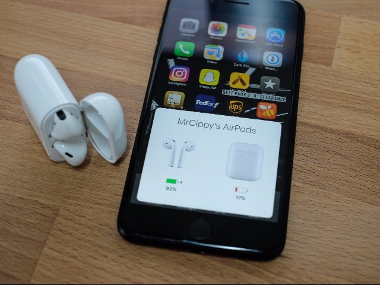
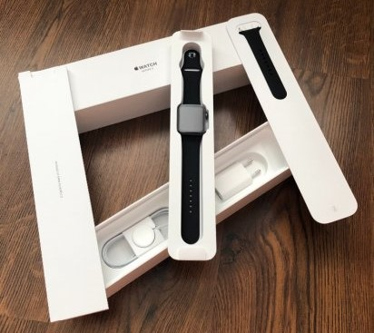

Apple Airpods
Sú to veľmi ľahké bezdrôtové slúchadla ktoré sedia v ušiach ako pozadie na šerbli. Výrobca uvádza výdrž batérie na 24hodín s priebežným nabíjaním, v prídavnej krabičke (powerbanke). Slúchadlá disponujú kvalitným zvukovým výstupom a nechýba ani zabudovaný mikrofón. V minulosti, na IOS 10, bol problém s ovládaním keďže sa dali ovládať iba cez mobil alebo apple watch. Po príchode IOS 11 sa situácia zmenila, ovládať sa už dajú poklepaním buď po ľavom alebo po ľavom slúchadle.
Apple Watches
Tieto inteligentne hodinky skvele dopĺňajú môj iphone. Práca s nimi je jednoduchá a jednoducho uľahčujú život vo svete technológií pretože už nemusí vyťahovať svoj iphone aby si si skontroloval svoje notifikácie stačí sa pozrieť na svoju ľavú ruku.
